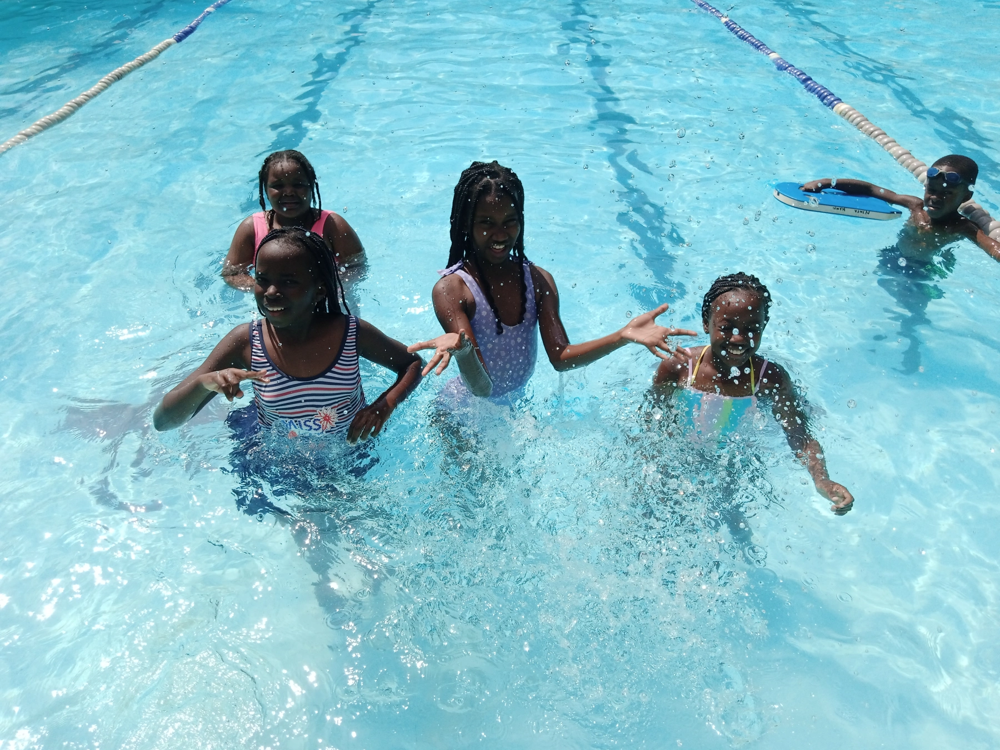

Hello there amazing readers! We finally made it to the end of the year. And the 17th of December was the day to reminisce all we had accomplished during the year sprinkled with some moments of fun. Follow along for a take on the day.
In the morning, our read was from the book of Luke 17: 12-19 where we learnt the bible story of the 10 leapers. We learnt how Jesus healed all of them but only one came back to say thank you. From this story we learnt about the importance of being thankful to God for all that He has done for us.
The day got even more fun with the swimming section that headlined the next hour or so and guys seemed to absolutely enjoy themselves.
Guys even gave us a quick Amazing Kids swimming show.
We headed back to class to re-energize ourselves with a cup of tea, samosa and mandazis.
Afterwards we settled for a letter writing session where we took a trip to memory lane for all the things we learnt during the year. We also described our favorite memories during the December Special.
Here's Arella with a beautiful tribute to 2022.
And here's Zoe sending a thank you our way and her best moments in 2022.
And finally Amadi, who talks about what she mainly loved during the December Special.
We ended our letter writing session with guys taking the time to write a heart felt letter to their loved ones for Christmas. Here's one from a daughter to a mother. So heart-warming!
And one to the family.
As you can see the day was a total bliss of fun and nostalgia of all our fun moments. Oh yeah, on this day we also wished each other a Merry Christmas being that it was only like 8 days away.
So, from us to you have a Merry Christmas and happy holidays! See you in 2023.